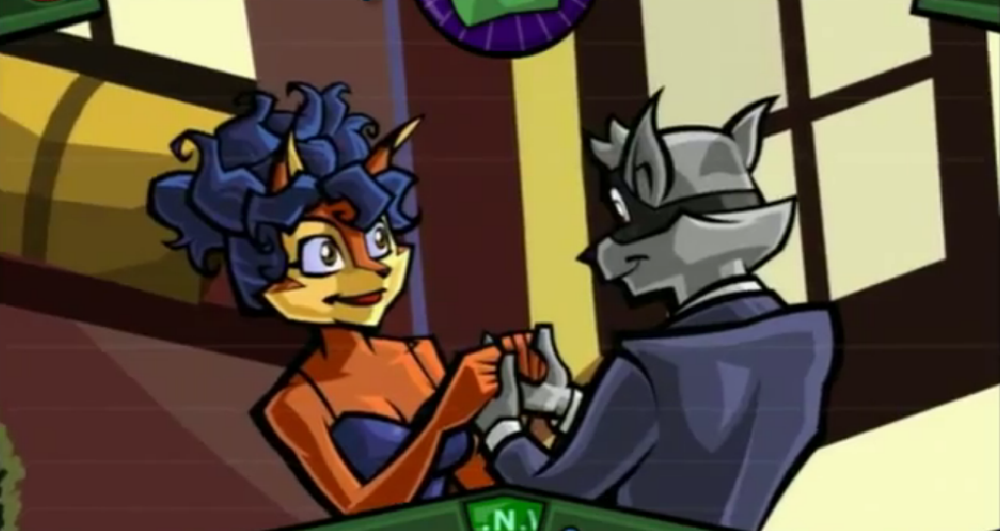

Sly 3: Honor Among Thieves is as game staring the three main characters Sly Cooper, Bentley and Murray. The game takes up the story of the Cooper gang, a gang of thieves, a while after the events of the comic Old Friends & New Questions .
Sly Cooper, Bentley, and other unidentified characters are attempting a vault heist on an island in the Pacific Ocean. They are intercepted by Dr. M, the island's owner. Sly gives up his family's cane to save Bentley from a monster, but gets captured himself. While the monster crushes him, Sly's life flashes before his eyes. He recounts his family's history and the events of the prior two games. He then recalls meeting one of his father's colleagues, Jim McSweeney, who revealed to Sly the existence of the vault and that it contains the Cooper family's accumulated wealth built up over the centuries. Sly went to find the vault, only to discover Dr. M had built a fortress on the island in an attempt to enter the vault himself. Sly needed additional experts to get past Dr. M's extensive security; he needed to expand the Cooper Gang.
In flashbacks, Sly recollects getting Murray back on the team in Venice, while stopping a mob boss from polluting the waters. Then the gang went to the Austrailian outback to recruit Murray's Guru. After that the got the robotics expert Penelope, from Holland, on the team. Last, They recruited Slys old enemies, Panda King and Dimitri, from China and the Caribbean Sea respectivly.
After this, the flashbacks end and Sly is unintentionally saved by the arrival of Carmelita Fox and her minions. They have hunted Sly all throughout the game. Then Sly gets his staff back and manages to get into the vault. There are loads of gold and treasure inside, but Dr. M continues to be a danger and he knocks Sly cold during a fight. The game ends with Sly having an amnesia, after Carmelita arrests Dr. M, and joining Carmelita as her partner in the police.
